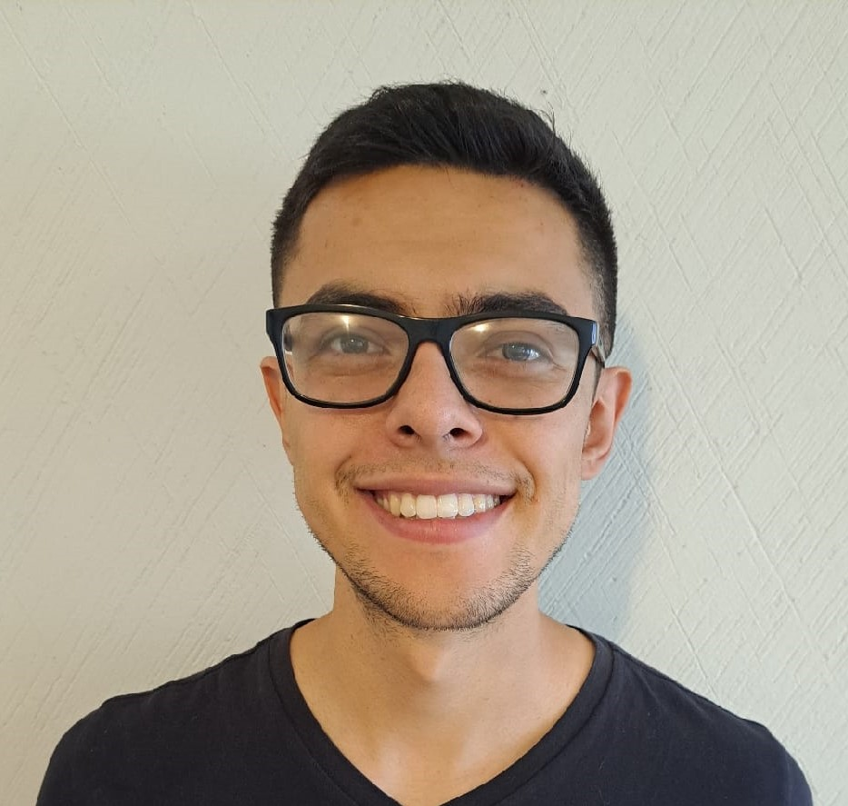

Angel Rodrigo Delgadillo German

About me
Dedicated and focused Project Coordinator Specialist with 2 years of
experience excelling at prioritizing, completing multiple tasks
simultaneously, and following through to achieve project goals.
Flexible, detail-oriented, and adaptive team player with expertise
inequipment operation, staff training and development, customer
service, and process improvements.
Education
- Bachelor of Science in Nanotechnology and
MolecularEngineering
Universidad de las Americas Puebla (2015 - 2020)
Work Experience
Accounts Assistant - Karbook (2020 - 2021)
- Chased missing transactions to help facilitate timely payments.
Prepared month-end closing entries to maintain detailed
reporting and recordkeeping.
- Reconciled Purchase Orders (POs) to produce accurate inventory
reports.
- Prepared files and templates for Budget, Forecasting, and
Actualswith consistent file management.
Project Coordinator - Computacenter
- Prepared presentations for customers detailing project scope,
progress, and results.
- Designed, planned, created, implemented, and monitored
allaspects of the project.
- Consulted with clients to better understand their needs,
goals, andrequirements and determine best course of action.
- Drew up project management calendar detailing timelines for
fulfilling different project goals.
- CompTIA A+ Udemy course certification.
-
Team Leader - Cashapp
- Organize, support, and instruct team agents to give exemplary
guidance and service to financial clients.
- Communicate objectives to accomplish
- Report progress to team members and superiors.
- Follow up of team members through the Salesforce platform.

Get to know my hobbies
Contact me